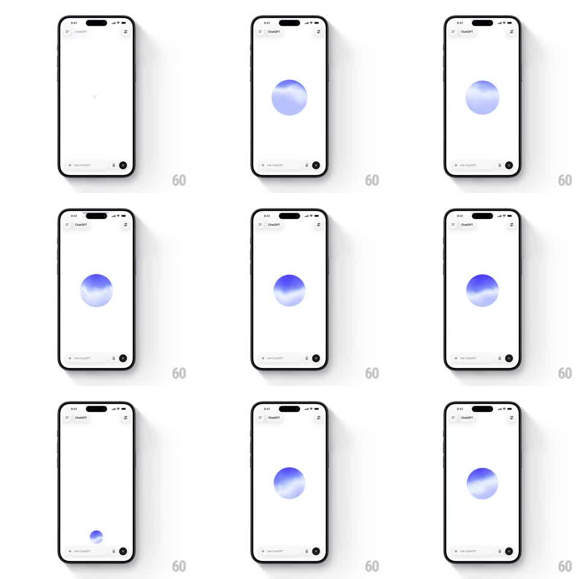

Media
Frame-by-frame

Rebuild this interaction 1:1: ChatGPT's voice orb - entering voice mode raises an animated blue-gradient blob to screen center where it breathes and ripples, and exiting collapses it back down into the bottom-bar voice button.

Rebuild this interaction 1:1: ChatGPT's voice orb - entering voice mode raises an animated blue-gradient blob to screen center where it breathes and ripples, and exiting collapses it back down into the bottom-bar voice button.
## Integration
Integration: stack-agnostic spec - springs given as stiffness/damping, timed motions as duration + curve; map every value to your framework and animation library of choice.
## Scene
ChatGPT chat home: mostly empty white conversation area, "ChatGPT" title top-left, bottom input bar ("Ask ChatGPT") with mic and a dark circular voice button on the right. Voice state replaces the conversation with a single sphere.
## Motion spec
Pattern: voice mode entry/exit - orb rises, breathes with gradient ripples, then shrinks back into its button.
- Entry: the dark voice button morphs into the gradient sphere, scaling up and traveling to screen center (scale 0.2 -> 1, translate ~240px up, 450ms, spring ~240/24).
- Active: the sphere idles with slow internal gradient drift (blue-violet waves rotate through the ball, ~6s cycle) and gentle scale breathing (+/- 4%, 2s); it swells ~10% on detected speech.
- Exit: the sphere shrinks and sinks back to the bottom-right button slot (400ms, ease-in-out), fading into the solid dark circle; the input bar fades back in (200ms).
## Calibration
- The gradient lives inside the sphere - soft vertical bands of blue and violet sliding, never a hard pattern.
- Entry/exit share one flight path so the orb clearly belongs to the button.
## Reduced motion
Orb crossfades in/out at final size (200ms); gradient drift pauses on a static wash.
## Don't miss
- The sphere is the only element on screen in voice mode - input bar fully fades out.
- Exit lands exactly on the voice button, restoring the bar in the same beat.